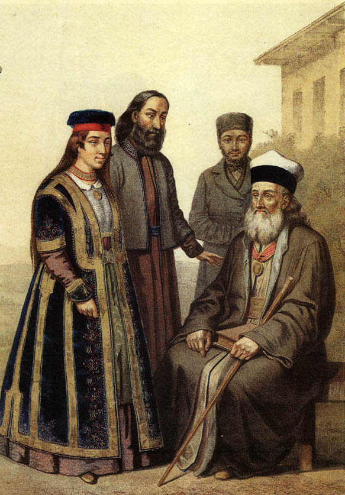

|
Pełna głębi, zamierzchła i niepowtarzalna |
| Jest historia narodu karaimów | |
| Staroasyryjski epigraf wyryty w skale. Kalchu. |
|
H istoria narodu karaimskiego./SKRÓCONA I NIEZBYT POWAŻNA/ |
 istoria karaimów, jednego z najstarszych narodów
naszej Ziemi, liczy nie jedno tysiąclecie. Nieprzypadkowo w jednym z dzieł,
światowej sławy badacza historii, E. Szwarca, pojawia się teza, że Adam był z
pochodzenia karaimem. Jednak trudno zgodzić się z tym przypuszczeniem, tym
bardziej, że Adam - to postać raczej legendarna.
istoria karaimów, jednego z najstarszych narodów
naszej Ziemi, liczy nie jedno tysiąclecie. Nieprzypadkowo w jednym z dzieł,
światowej sławy badacza historii, E. Szwarca, pojawia się teza, że Adam był z
pochodzenia karaimem. Jednak trudno zgodzić się z tym przypuszczeniem, tym
bardziej, że Adam - to postać raczej legendarna.
Historia Karaimów, którą znamy, liczy sobie minimum pięć tysięcy lat.
Zagadnienia dotyczące protoplastów karaimów, żyjących 6-7 tysięcy lat temu, pozastawiamy bez komentarzy, w związku z brakiem dostatecznej ilości namacalnych dowodów w tej dziedzinie. Mamy uzasadnioną nadzieję, że sprawa ta zostanie w najbliższym czasie wyjaśniona przez współczesnych badaczy historii.
Pod koniec czwartego tysiąclecia pne., płaskowyż Irański zamieszkiwały plemiona posługujące się gwarą turecko-kipczacką wywodzącą się z oguzyjskiej grupy językowej. Dotychczas nie wyjaśniono jednoznacznie, przyczyn migracji tych plemion na tereny wschodnie i osiągnięcia w końcowej fazie wędrówki, rejonu środkowego Międzyrzecza Bliskowschodniego. Właśnie w tym miejscu nastąpił podział wśród wędrujących plemion. Część z nich powędrowała na południe tworząc później państwo Sumerów, druga część, pod przywództwem Czarnego Wodza (Kara_imam lub Kara_im), ruszyła na północ, tworząc w przyszłości zalążek – rdzeń narodu karaimów.
Rozłam powstał na podłożu różnic religijnych. Sumerowie byli poganami, karaimi natomiast, mimo że nie mieli jeszcze w pełni uformowanego światopoglądu, już wyznawali w większości monoteizm.
Przyszli Karaimowie, po osiągnięciu północnych rejonów Międzyrzecza, osiedlili się tam zajmując obszar w pobliżu miasta Charon, leżący pomiędzy dzisiejszą Turcją, Irakiem i Syrią.
Podział plemion na Karaimów i Sumerów, nie spowodował zaniku wzajemnych kontaktów, zarówno handlowych jak i kulturalnych. Znaczna część osiągnięć w dziedzinie kultury i nauki, zwyczajowo przypisywana Sumerom, faktycznie jest dorobkiem karaimów. Stwierdzenie to jest w pełni uzasadnione i znajduje potwierdzenie u znanych autorytetów naukowych. Olbrzymi postęp uzyskany wówczas w zakresie astronomii oraz wynalezienie pisma klinowego jest wyłączną zasługą karaimów. Niektórzy badacze, właśnie w tym ostatnim osiągnięciu doszukują się korzeni nazwy Karaim. Wyraz „karaim,” w narzeczach zamieszkałych dookoła semickich plemion, oznaczał – „czytający”, ponieważ karaimi byli wówczas jedynym narodem, który posiadł umiejętność czytania i pisania. Istnieje również duże prawdopodobieństwo, pochodzenia nazwy Karaim, od imienia ich legendarnego przywódcy - Czarnego Wodza.
Na przełomie drugiego i trzeciego tysiąclecia, Abraham, wraz ze swym ojcem Terrym, opuszcza miasto Sumerów Ur, przeprowadzając się najpierw do Charonu, gdzie mieszka aż do śmierci ojca, a po jego pochówku, przenosi się do Palestyny. Mieszkając w Ur, Abraham, jak i pozostali mieszkańcy miasta, był poganinem. Po przybyciu do Palestyny, był już gorącym zwolennikiem monoteizmu. Jest rzeczą oczywistą, że zmianę tę zawdzięcza wpływom mieszkającym w Charonie karaimom.
Judaizm Abrahama był bardzo zbliżony do religii głoszonej przez karaimów. Dopiero w późniejszym okresie, drogi tych dwóch wyznań potoczyły się w różnych kierunkach. Judaizm ciągle ulegał przemianom, a po napisaniu Talmudu, stał się religią zupełnie odmienną.
Początek obu religii ma jednak wspólne korzenie.
W XVI w. pne. Karaimi znajdowali się w obrębie państwa Hetytów, a po jego upadku dostali się pod wpływy Asyrii. Ten okres historii Karaimów, jest najmniej zbadany przez historyków i zawiera najwięcej niewiadomych.
Po zagładzie Asyrii, karaimi kolejno znajdują się pod wpływami Persji, Państwa Aleksandra Wielkiego i państwa Partów. W II-I w.pne. znaczna część karaimów rozprasza się po całym Bliskim Wschodzie, a ich wpływy są odczuwalne i widoczne w większości państw regionu. Dotychczas, tego rodzaju wpływy były niezauważalne i raczej epizodyczne. Na przykład, próba wprowadzenia przez faraona Echnatona, monoteizmu w Egipcie, jako religii obowiązującej, była podjęta pod rozszerzającymi się wpływami nauk karaimów. Potwierdza to fakt, że pierwszym ministrem faraona był Abdulla Puki (prawdopodobnie karaim Fuki).
W tamtych czasach, karaimi mieli zakorzeniony od zarania zwyczaj zamieszkiwania w jaskiniach. Wystarczy jako przykład wspomnieć jaskiniowe miasta – twierdze Mangup-Kale i Czyfut-Kale. Widocznie Wspólnoty wczesnochrześcijańskie, zamieszkując również w jaskiniach, znajdowały się pod silnym wpływem, mieszkających obok karaimów, ponieważ przyjęły od nich ten nawyk. Znaczna część badaczy starożytności skłania się do hipotezy, że Panna Maria najprawdopodobniej wywodzi się z rodziny karaimskiej. Jako argument, przytaczają fakt, że wolała urodzić Jezusa właśnie w jaskini. Jednak, argumentacja ta wydaje się być mało prawdopodobna i nieco naciągnięta.
W początkowym okresie naszej ery, rozpoczyna się exodus karaimów na północ. Ich droga wiedzie przez górskie przełęcze Kaukazu, na terytorium obecnego Dagestanu. W VII w. proces ten ulega szczególnemu nasileniu w związku z szerzącą się inwazją arabów - wyznawców islamu. Broniąc się przed tym, karaimi zawierają sojusz z miejscowymi plemionami pochodzenia tureckiego, tworząc Kaganat (chanat?) Chazarski. Tam stopniowo obejmują najważniejsze stanowiska polityczno – gospodarcze. Właśnie w tym okresie, religią panującą w Kaganacie staje się stopniowo karaimizm. Karaimi zamieszkują w najważniejszych rejonach nowopowstałego państwa. Część z nich osiedla się na Półwyspie krymskim.

Pomimo opuszczenia przez Karaimów Persji i rejonu Międzyrzecza, wpływy ich nauczania w tej części Azji były na tyle silne i zakorzenione, że część mieszkających tam Żydów na czele z Ananem ben Dawidem, pod koniec VIII w. przyjmuje religię Karaimów. Należy jednak stwierdzić, że po jego śmierci, większość żydów nawraca na judaizm. Mimo to, w Izraelu, Egipcie i niektórych innych krajach Bliskiego Wschodu zachowały się po dzień dzisiejszy niewielkie wspólnoty, zrzeszające zwolenników nauk Anana ben Dawida, w dalszym ciągu nazywające siebie karaimami.
Zagłada Kaganatu Chazarskiego, oraz masowe inwazje Tatarów, stanowiły największą tragedię w dziejach narodu karaimskiego. Większość Karaimów poległa, broniąc swej niezawisłości, a pozostali przy życiu popadli w całkowitą zależność i podporządkowanie władzy Chanatu Krymskiego. Jednak w zakresie życia kulturalnego, sprawy przybrały odwrotny kierunek. Tatarzy krymscy, będąc na niższym poziomie intelektualnym od karaimów, przyjęły od nich nie tylko większość zwyczajów, ale również niektóre zwroty językowe. Właśnie dlatego język krymskich Tatarów tak się różni od mowy ich rodaków zamieszkałych w innych regionach Azji.
Współczesna historia Karaimów jest zbadana w stopniu zadowalającym, więc nie wymaga dodatkowych wyjaśnień. Należy zachować wiarę, że zagadnienia historii narodu karaimskiego, niewyjaśnione do końca w niniejszym krótkim opracowaniu, będą systematycznie uzupełniane wynikami wnikliwych badań, prowadzonych przez współczesnych, bardziej dociekliwych karaimskich specjalistów – historyków.